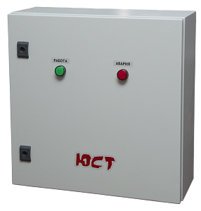
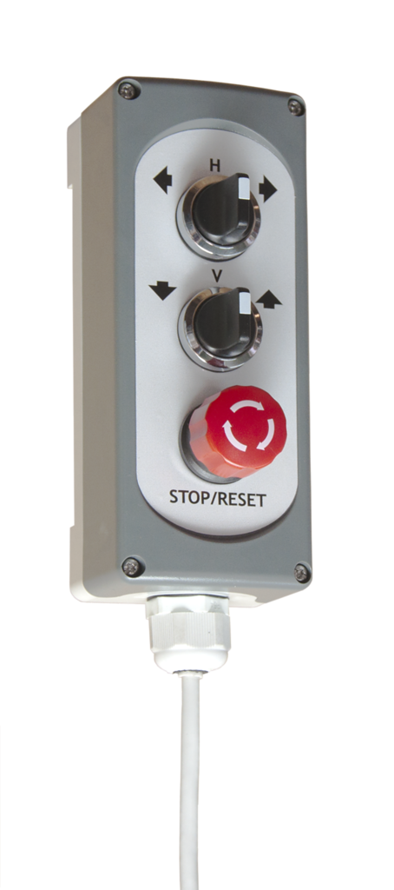
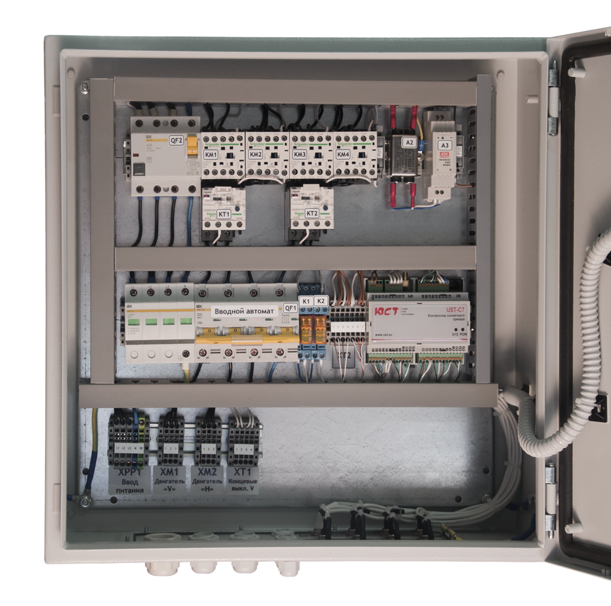

Шкаф управления солнечным трекером UST-DR-002
115 000Р
.png){kind=link}
{kind=link}
{kind=link}
{kind=link}
{kind=link}
Устройство предназначено для автоматического управления солнечным трекером для выполнения ориентации на Солнце рабочих поверхностей систем генерирующих электричество, либо систем концентрирующих (генерирующих) тепловую энергию, установленных на трекере. Шкаф управления построен на базе собственного контроллера UST-C7 — первого специализированного контроллера Российского производства для ориентации солнечных батарей бытового и промышленного применения. DSC9960png.pngПринцип работы устройства основан на вычислении местоположения Солнца и подстройке азимутального и зенитного углов поворота рабочей поверхности для ориентации на Солнце. Исходными данными для вычислений являются точные географические координаты размещения трекера, а также текущие дата и время. Для определения координат и даты/времени устройство оснащено ГЛОНАСС/GPS приёмником. Шкаф управления предназначен для использования со следующими типами трекеров: UST-AADAT — двухосевой трекер, движение по азимуту выполняется с помощью поворотной платформы, движение по зениту с помощью линейного актуатора; UST-PASAT — одноосевой трекер со слежением по азимуту, управление поворотом наклонной оси по линии север-юг; UST-VSAT — одноосевой трекер со слежением по азимуту (с сезонной ручной ориентацией по зениту), движение по азимуту выполняется с помощью поворотной платформы, движение по зениту вручную; UST-HSAT — одноосевой трекер со слежением по зениту, управление движением по зениту при помощи линейного актуатора. Возможность использования совместно с другими типами трекеров необходимо уточнять в техническом отделе нашего предприятия. На рисунке показан пример объединения нескольких шкафов управления в единую сеть по сети Ethernet. Длина каждого сегмента Ethernet не должна превышать 100 м. Суммарная длина шины RS-485 не должна превышать 1000 м. Для Ethernet также может использоваться переход на оптоволокно.


Структура из нескольких трекеров
Для защиты конструкции от чрезмерных ветровых нагрузок и твердых осадков (град, ледяной дождь) устройство содержит встроенную метеостанцию. Устройство определяет скорость ветра и наличие осадков. Для защиты от сильного ветра конструкция переходит в горизонтальное положение, для защиты от твердых осадков — в вертикальное. Устройство содержит встроенный контроллер, выполняющий все необходимые вычисления. Никаких других вычислительных устройств и компьютеров для работы устройства не требуется. Встроенный контроллер содержит часы реального времени и энергонезависимую память, что позволяет ему сразу же начать работу при включении питания, не дожидаясь захвата спутников системой ГЛОНАСС/GPS. Устройство оснащено двумя портами RS-485, работающими по протоколу Modbus, что позволяет интегрировать устройство в системы диспетчеризации. А также, дооснастив устройство модулем JL301, организовать удаленный мониторинг за системой по сети Ethernet и GSM.
Функциональная схема системы
.png)
| Номинальное напряжение сети питания, В | 380 (3 фазы) |
| Номинальная частота питающей сети, Гц | 50 |
| Допустимый диапазон напряжения питания, В | от 323 до 418 |
| Потребляемая мощность, Вт, не более | 15 |
| Номинальная мощность двигателя горизонтальной оси, Вт | 750 |
| Номинальная мощность двигателя вертикальной оси, Вт | 250 |
| Защита двигателей от перегрева | Есть |
| Подключение датчика ветра | Есть |
| Подключение датчика осадков | Есть |
| Тип подключения концевых датчиков и датчиков подсчёта зубьев | NO PNP |
| Тип поддерживаемой спутниковой системы позиционирования | ГЛОНАСС, GPS |
| Внешний пульт для ручного позиционирования | Есть |
| Точность позиционирования по азимуту, º, не хуже | 2 |
| Точность позиционирования по углу от горизонта, º, не хуже | 2 |
| Температура эксплуатации, ºС | от минус 25 до 50 |
| Температура эксплуатации,опционально с системой поддержания микроклимата, ºС | от минус 60 до 50 |
| Наработка на отказ, ч | 75 000 |
| Срок службы устройства, лет, не менее | 7 |
| Габаритные размеры, мм (ШхВхГ) | 550х500х220 |
| Степень защиты оболочки шкафа и пульта | IP65 |